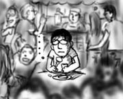

独立記念日なので、夜になると家の裏の桟橋で花火が上がります。部屋に引きこもっていても全然問題ないのですが、それだと花火の音がうるさいだけなので、見に行った方が精神衛生的にもよいでしょう。考えてみれば初めての夏らしいイベントですし。
花火は、ぽつぽつと間隔をおいて上がり始め、開始後15分くらいで最初の山が来たなぁと思っていたら、そのまま終了。短っ！！
あっけない幕切れに、何となく部屋に戻るのもバカらしくなり、その後は桟橋の売店でビールとつまみを買ってぼんやりしてました。行き交う人達や、周りで同じく飲み食いしている人達は、みんな友達グループやカップルや家族連ればかりですが、負けない！なぜなら今日は独立記念日だから！真にインディペンデントなのは僕だけだから！インディペンデンス・ディ万歳！(そういう趣旨の日ではありません)

どちらが精神衛生上よかったのかは、今後の判断が待たれるところです。
一応、デジカメで撮っていたので、予期せぬ花火の断末魔(いやな言い方)を見たい方はどうぞ→(花火: mpeg, 264kbytes)
独立記念日で連休になるということで、何をして過ごそうかなぁと思っていたところ、街でメトロバスのボディに「AnimeExpo2004」という文字列を発見しました。これだ！(ひらめいた！)
さっそく家に戻ってネットで検索けんさく！ネットでレジストレーションを済ませ、会場にゴーです！(こういうことだけ行動が早いのはどうか)
AnimeExpoは、ホテルのイベントホールとコンベンションセンターを借り切って、日本アニメの上映会と、企業ブースでアニメのプロモーション＋グッズ販売が行われているという感じでした。グッズ販売では、デジ子の帽子が大人気。そして、会場にはなぜかやたらと武器屋がありました。結果、デジ子帽をかぶり、木刀を持った人が大量に会場にあふれることに(実話)。
コスプレイヤは結構歩いてました。こっちは体型のいい人も多いので、衣装が無茶苦茶似合ってたりして(以降、本物と呼称)見てると結構楽しいです。あ、！リンク(本物)が黒の乗手(本物)と楽しそうに談笑してる！うわ、セーラームーン(本物)がスタバでくつろいでる！みたいな感じで。
あと、どうやら太鼓が大変にクールらしく、会場の外で参加者が太鼓を叩き始めると、みんなが異常に盛り上がります。企業ブースでも、中２階の吹き抜けに定期的に太鼓を打ち鳴らす団体が現れ、アニメグッズをバラまくのです。餅投げ？みんな歓声を上げて大騒ぎです。
しかし、こちらの人が叩く太鼓は三・三・三拍子なんです。どうしても三・三と来たら次は七を期待してしまう僕は、つんのめって仕方がない。メリハリが全然ない。あー！(ストレス)
企業ブースを冷やかして、コスプレを堪能した後は、アニメ上映で「茄子 -アンダルシアの夏-」を見て帰宅しました。ほとんどのアニメ作品は日本語音声＋英語字幕で上映されていたので、北海道の期待の星、大泉洋の声優ぶりをしっかりと鑑賞することが出来ましたよ。
イベント会場となっていたホテルはMarriottとHilton。奇麗なロビーでピアノが生演奏される中、藍より青しのバッグを抱えた人たちやセーラームーンが行き交うという、大変愉快なものを見させてもらいました。眼福、眼福。いや、むしろガンプラ？(関係ない)